This is my first day
Today I learned how to make a website.
This weekend my cousins came over so I will be with them.
9/2/22
This week I worked on tinker cad and I am making a rube golberg machine.
I also worked on making a toaster in cad.
This weeking I am going to hang out with friends.
9/8/22
This week I finished my tinker cad of my rude golberg machine. I got a group and am now gonna make a better one with my group.
I am going to San Francisco this weekend.
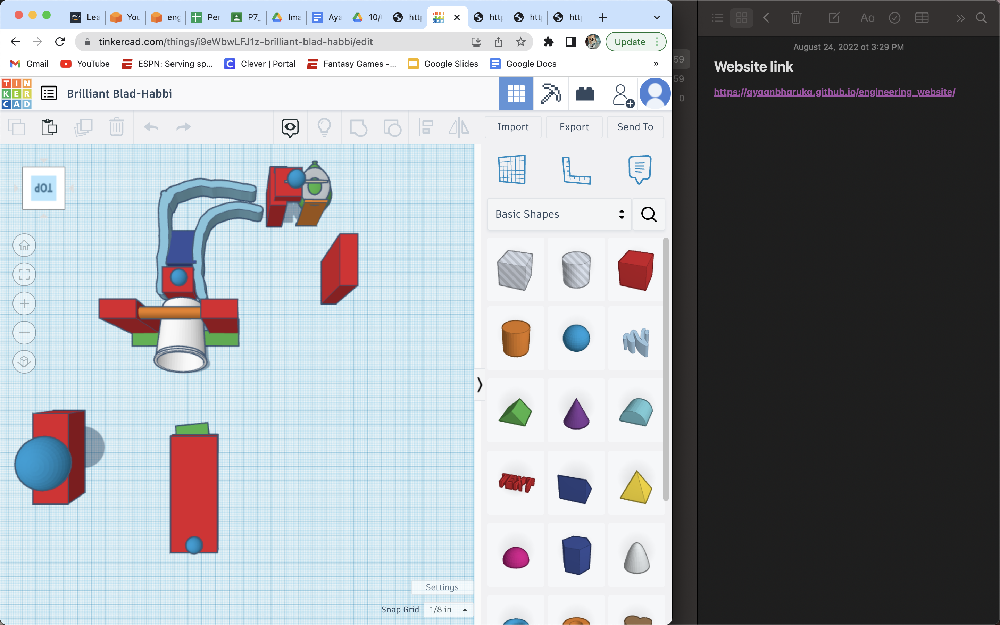
9/16/22
This week my group and I are working on our rube goldberg machine with cardboard.
On thursday we did a challenge as a group and we used 1 piece of paper and put a marble inside of it and made it float for 5 minutes in water.
9/26/22
This week my group and I finished our rube goldberg machine.
we did our project day and finished in 5 attempts.
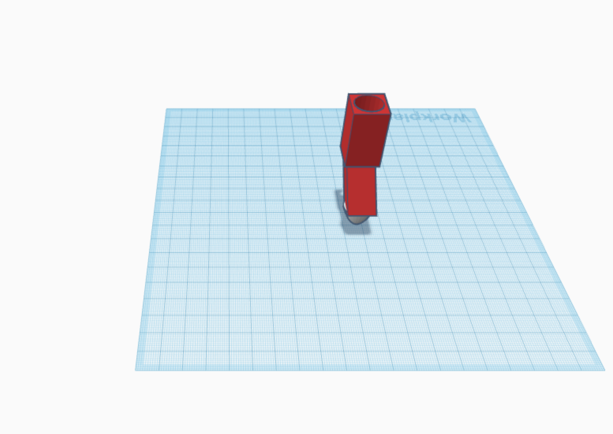
10/14/22
This week my group and I were trying to get ideas of how to make a soda bottle fly into a field goal pole using a pump. A couple ideas we had were using coke and mentos. These ideas were good but it had some errors when we acutlly thought about it.
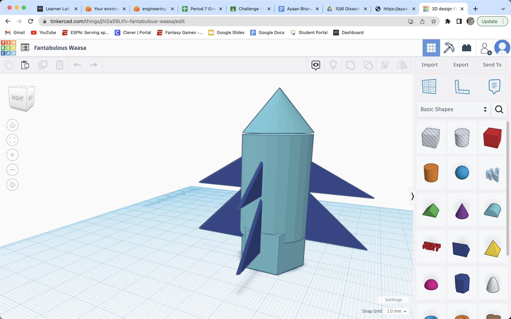
10/20/22
this week my group and I fully made our project. We made it so we can put coke inside of the bottle and fill it with air. It will then fly after we release the air and it should fly really far.
10/24/22
On friday we launched our rocket and it did not go as planned. We realized that putting coke and mentos would make it not work. So our rocket didn't go far at all and probably went 4 feet far then fell. We then tried again, but got the same result, but the second was with just coke.
10/31/22
This week we used learned aobut environmental engineering. In environmental engineering we learned how to make a filter for water. We used cotton balls, rocks, dirt, and soil. we then put dirty water inside of the filter and most of the dirty water got clean and we got a lot better and clean water.
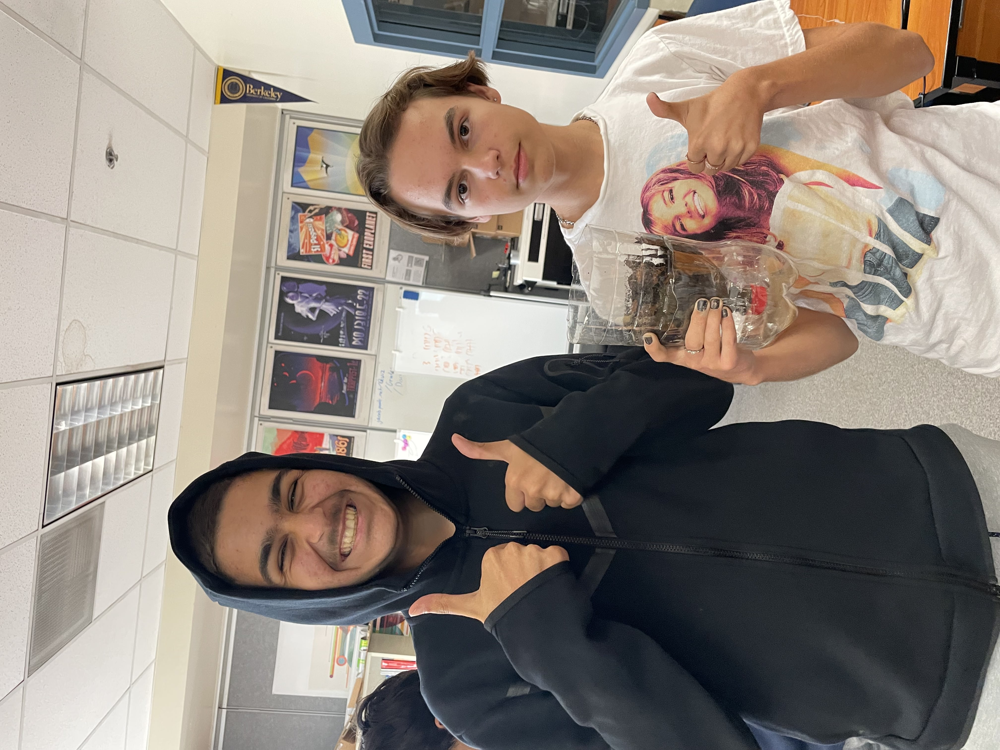
11/4/22
This week, we started learning about electrical engineering. To start electrical engineering, i started working with breadboards on tinker cad. In tinker cad i worked on it by using batterys with around 9v and we used a led light and a resister to try and make the led light glow. Next week we are going to work on a bread board and we will work on an actual bread board with real led lights.
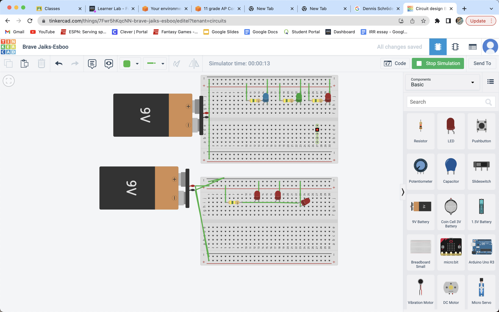
11/10/22
This week my partner and I used a real breadboard and a real led light and tried to light it up. We used a 9v battery and a resister to not use too many volts in the led light. If we put too much volts into the led, the led will explode and the led will not work again. We had three different patterns to do. Our first pattern was that we just had to use 3 resisters in a sequence. Then we had to use 1 resister and use three led to get powered from it. We then use a multimeter to see the voltage and resistence from our resister.
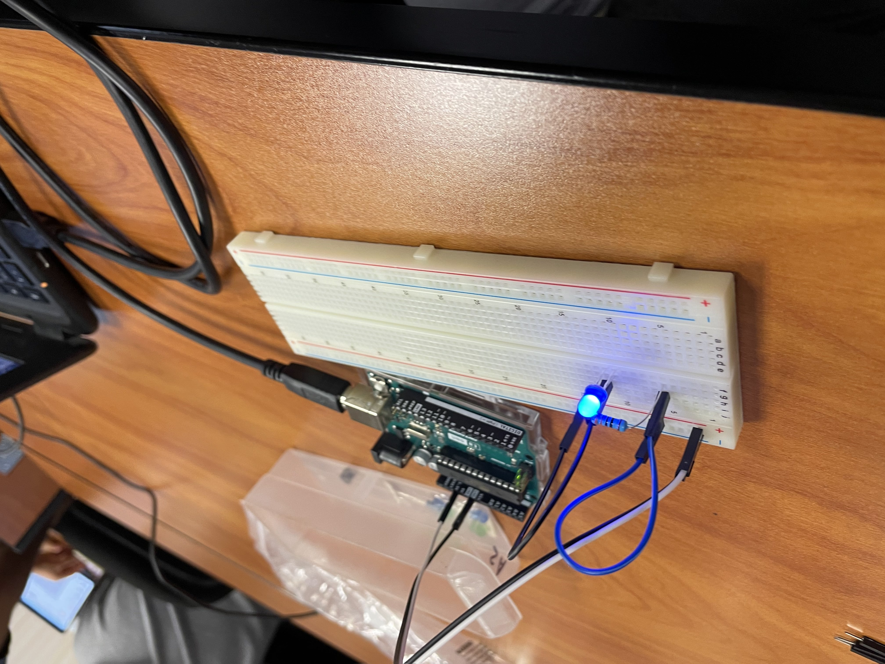
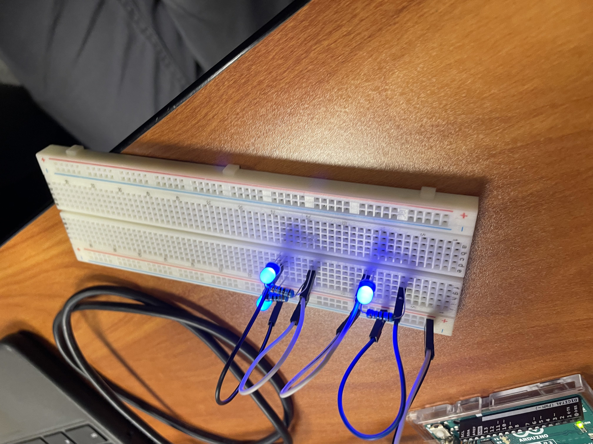
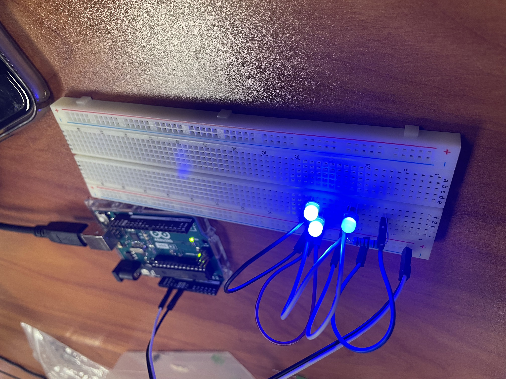
11/18/22
This week, my partner and i started using the breaboard, led and the resister on the breadboard again. This week we used an arduino and actully coded on the arduino and make aptterns and tried to make the led flash on and off with or without a delay. On thursday for our challenge we had to build a idea so a polluted lake with bromate that can give you cancer can get prevented from giving everyone cancer and try to build a fast, reliable and a cheap solution to try and save peopele from drinking water from the river and get cancer.
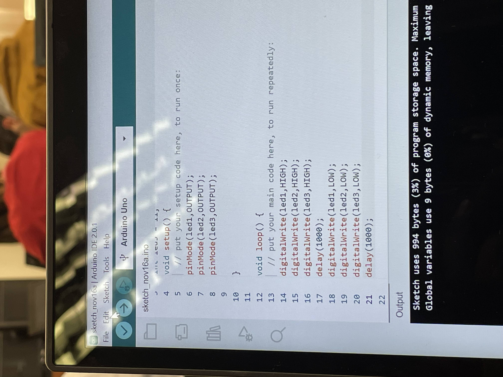
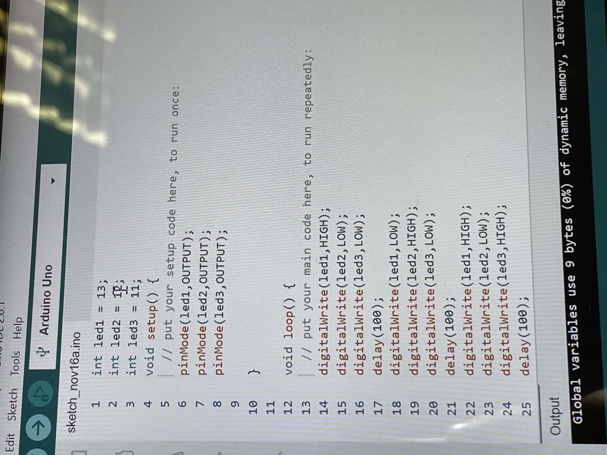
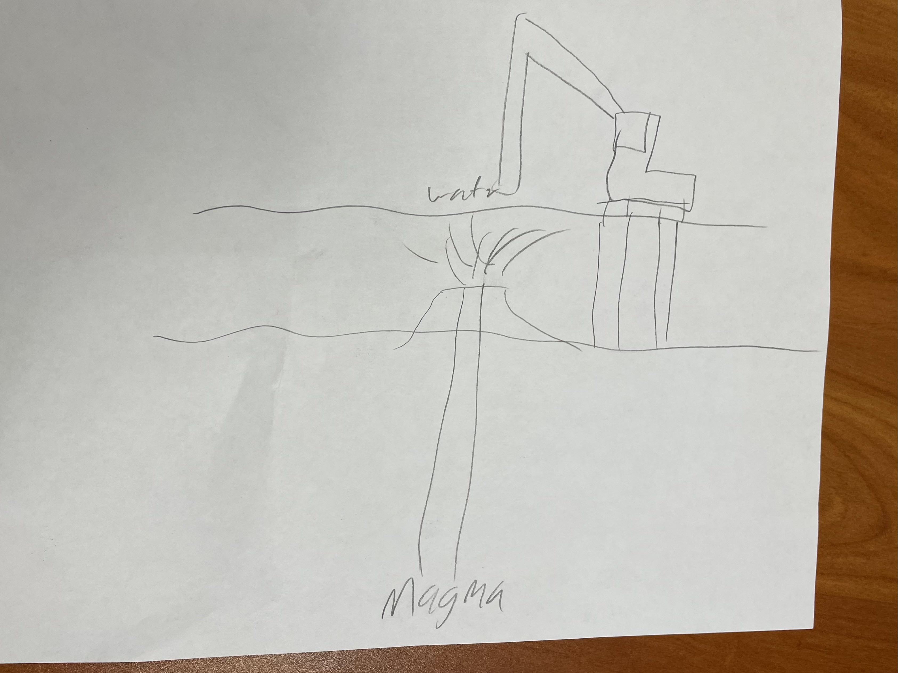
This is the link to my lake idea
12/2/22
This week we got split up into groups of three. In our group we are basically working on our final for this class. We are using hard uncooked noodles to make a bridge looking support that is strong. Later after we are done we are going to use buckets of water to hold the water and to try to keep the water up without falling.
12/9/22
This week my group and I made a lot of test ideas that we wanted to use on our final. we tested one of ours and it broke really fast. So we made some improvments. In our new one, we used the same design but we made it more sturdier and added extra support. We are now going to start to make our final one.
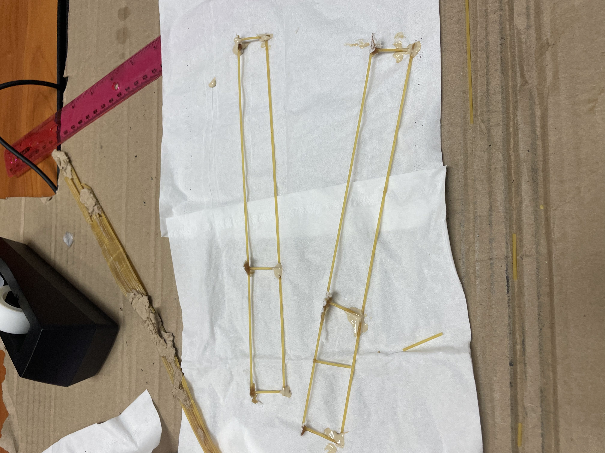
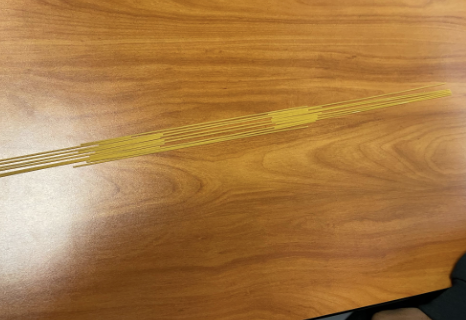
12/16/22
This week my group and I worked on our project again and we actually finished our final project. We never tested it because we didn't have enough time to build a new one. thats why I do not A FULL VIDEO OF OUR ACTUAL TEST. We hope our project works and we get a good grade.
1/13/23
This week we got put into groups of three. In the groups of three we had to make a product for something like shark tank. Thinking of products and how people would want to invest in them. Then, we ended up choosing Instant snow. We chose this because it is very good for decoration and kids can also have fun with snow. In the link attached, it is our slides presentation. Nothing is final in the presentation.
This is our slides presentation.
1/20/23
This week we kept working on our project. On monday, we presented our project to the class. One of the other students decided to offer us 180k for 15 percent. After accepting the deal, my group and I realized that we made the wrong decision and we lost a lot of money. Even though we lost money, it was fun to present and make a deal with someone. Now, on friday, which is tomorrow we might have a challenge day, because we haven't done one in over 3 weeks. This weekend I don't know what i am doing yet. My dad left for India on tuesday and my Mom left today. So it will just be my sister, my cousin, my grandparents and I at home.
1/27/23
This week we got broken up into groups of two. We are now going to work on a project for about 4-6 weeks. Our project is to make one of three options and we choose to make a mouse trap car. We need a lot of materials to make the car and we made a 6 page proposal for it. This week we also had an expirement day and we made oobleck. Oobleck is a liquidy material that if you punch or hit it won't make your hands dirty but if you let it sit in your hand it wil melt and make your hands dirty.
This is our proposal docs.
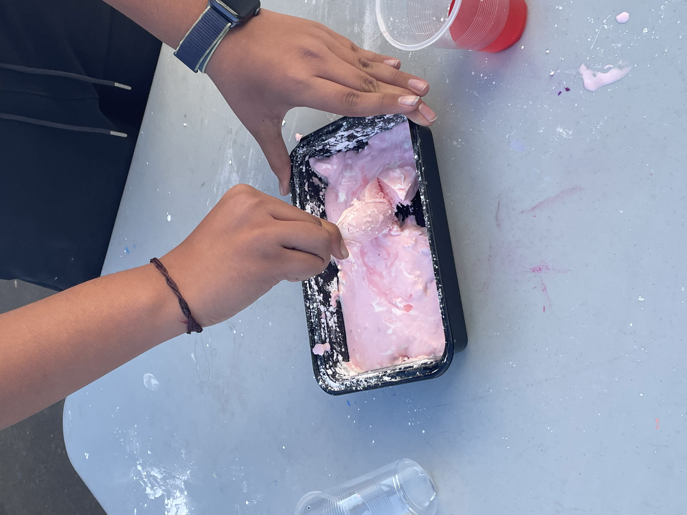
2/3/23
This week we started to cad our design. We started cading our design in tinkercade on monday. On tuesday we kept working on our tinkercad and we almost finished. We weere 90% done we just had to make the mosue trap car more realistic and make it a 1 to 1 design. On wednesday we never got ot 7th period because during 4th period there was a suspiscious person on school and we had to get evacuated and put in lockdown. This leaded to us going home early. Due to the whole incident that happened on wednesday I ended up not going to school, so I did not do the challenge day this week. Today, Friday we finished our tinker cad and are hoping to start working on our project from next week.
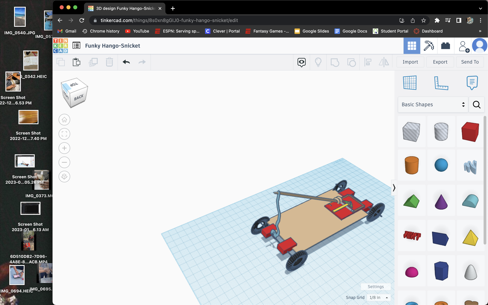
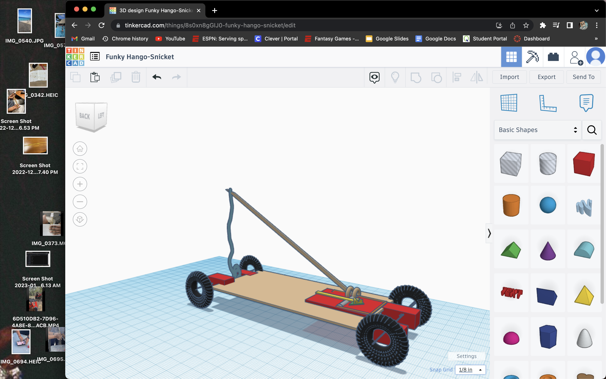
2/10/23
This week we continued to work on our mosue trap project. This week, my partner was not at school so I had to try doing to project by myself. In the project I now finished the base of the project and hot glued it together. I also added the mouse trap to the base and am now going to start putting wheels on to get it to start. For challenge day on thursday we had to make an attachment to go on top of a ruler to then be able to walk from one side to another side of the basketball courts. We then decided to make a rhombus shaped design to then make a water balloon reach the other side safely.
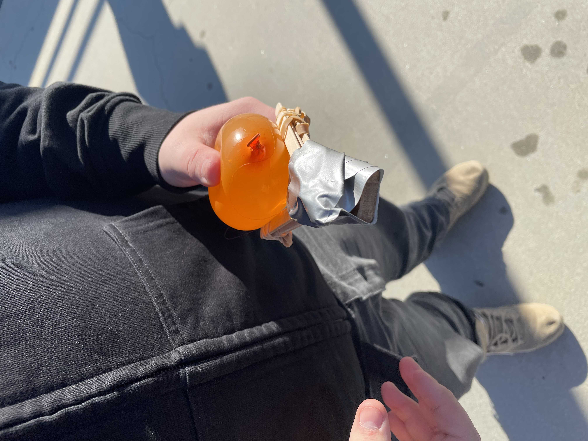
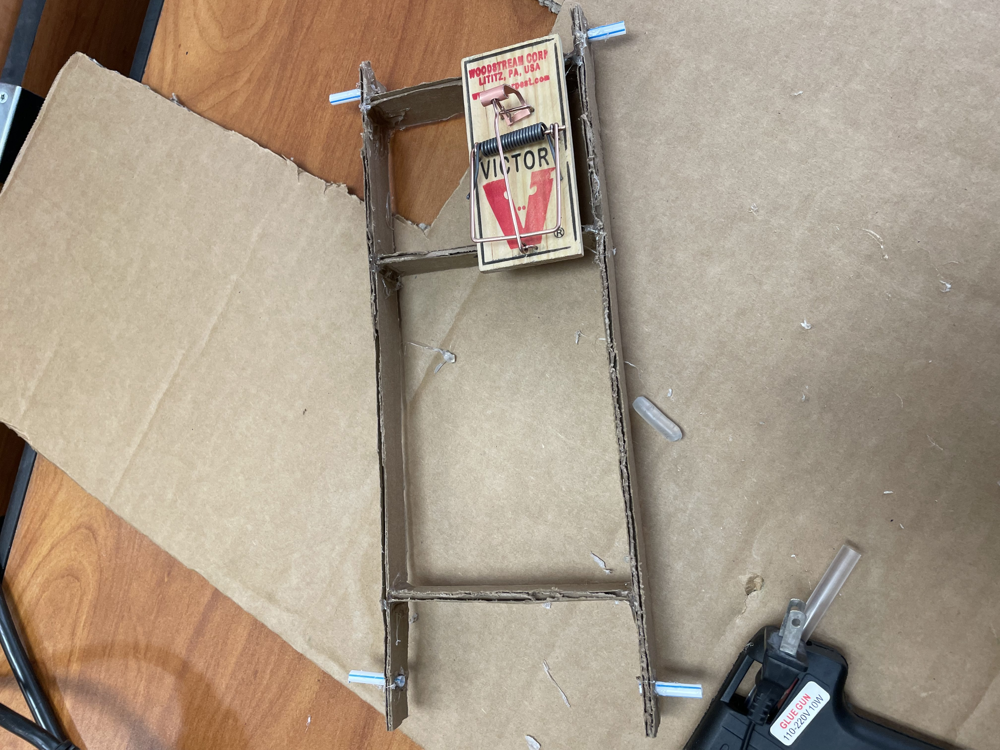
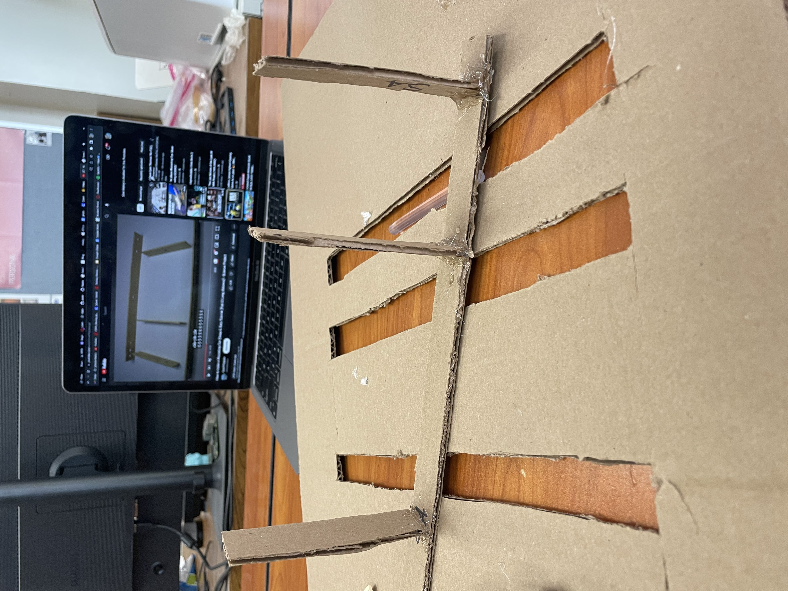
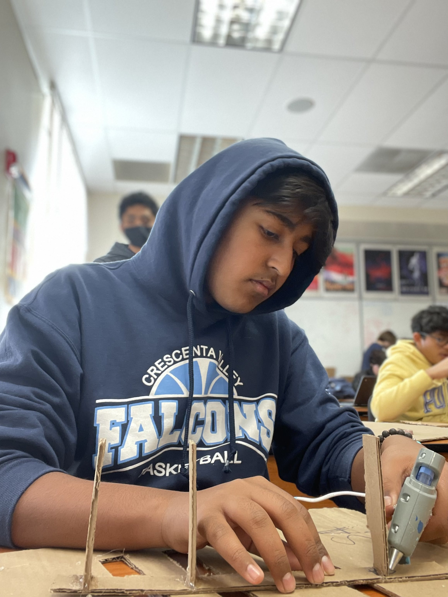
This is my challenge day google document
2/17/23
This week we continued to work on our mosue trap project. My partner and I have finished our mouse trap car and are now testing it to see if there and any problems or bugs with our design. One major bug we found was that our car would not go straight because the wheels aren't aligned properly. If we have more time next week, I hope that we might change our wheels so our car can be a lot more efficent. I forgot ot take photos of our project, but here is a video of our project working.
2/24/23
This week, my partner and I continued to work on our mouse trap car. In our mouse trap car we decided to mini carboard pieces on all 4 of the sides. This is so the wheels that we made become a bit more accurate and end up goin straighter than before. We kept forgetting to take vidoes of our project actually workin, but below is a photo of the sides of our robot after we added cardboard pieces on the side.
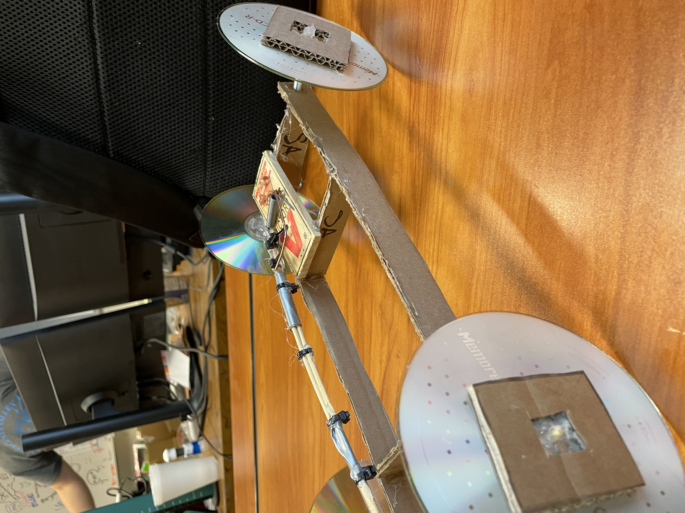
3/3/23
This week my group and I worked on our project for our last 3 days. We had a plan of finishing our project on Monday, Tuesday and Wednesday and then on thursday we will go into the cafeteria and we will test our cars out. When we tested our cars, on the first attempt, we went pretty far but didn't reach the farthest. On the second attempt we went the farthest and did really good. Our car achieved our goal that we wanted to accomplish. Our design matched our cad almost exactly the same but with just a little bit of a difference. We made the stick longer and more wire. Something I learned while doing the project was that I learned that for building it, everything needs to be alined or else the car will go unevenly. I also learned that I need to problem solve a lot. If i was given more time, I would try to fix my wheels because my wheels were uneven and they were not good. This led to our robot going from left to right and not going the distance it could've gone with straight wheels.
3/10/23
This week we started by learning about all the different carrers. For example I put a slides presentation on computer engineering and wrote a ton of things that are about the jobs. So, we researched and we worked on that for the whole day. Since next week is spring breakwe didn't have that much work to do. This was to help us see what to do in the future. then we got put into groups of two and we got a problem statement. The problem statement that we got was that we had to make a boat that would fit in a 7cm by 7cm pvc pipe. The thing we were trying to achieve was to try to get the farthest down a gutter without getting stuck. Something we learned was that you can not make it too heavy or make it too unbalanced. Our solution to the given problem was to make a skinny kinda long. But, one thing we did not see well enough was that we made the weight balancing too unbalanced and it was too back heavy. Also we had a blue rope thing on top and it leaded to getting stuck on the sides of the pvc pipes. No, it did not achieve our goal because it got stuck and did not move any further. Something we could have done better was that we could havep ut the rope that was dangling off together so it does not get stuck. If i had more time I would have used more tape to keep it stable and to leave it from expanding outwards
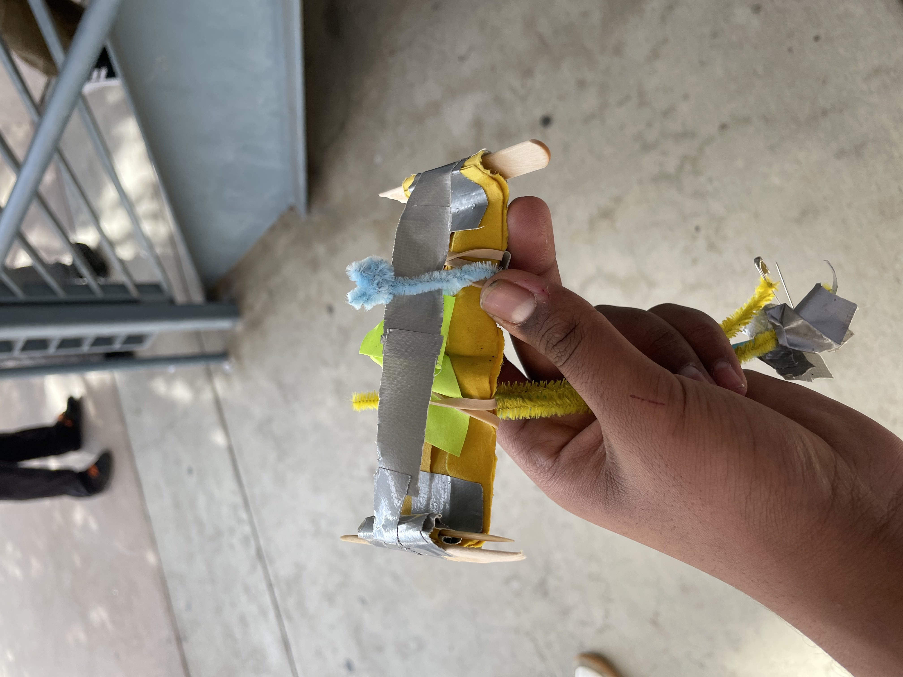
This is my google slides presentation for the career project This is my project form for my gutter boat project.
3/24/23
Over spring break I didnt do that much i just chilled with my family and friends. This week we worked on finalizing our egg drop design and to start to see whatr materials we need. Here is the photo of our tinker cad design.
3/31/23
This week we started to make our actual box for our egg drop. As shown on the cad before, the design is that we make a big box with a mini box then a mini box with a egg and three balloons to make sure the landing is good. Also we add a parachute on top to make sure the landing goes slowely. We tested on friday and our design worked and we did not break the egg. AWS ended the course so we could not update the website. Here is a video of it.
4/7/23
This week we started our final project which is to make a boat to flaot in water. Our goal is to let 2 people float in the boat and go from one side of the pool to the other side. This week we just started making a design of what we want our boat to look like. The design below is good and it will have enough protection from it to sink.
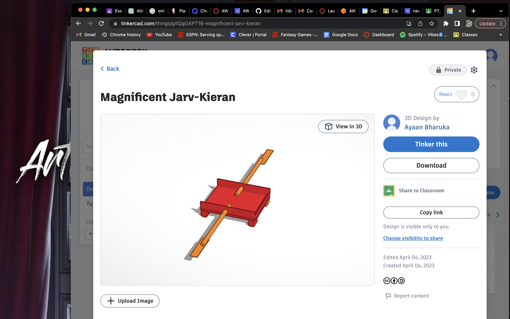
4/14/23
This week we started to build a test boat out of cardboard. This is a small version of our boat and we decided to make a design that is two boats next to each other and the are connected through a tube on the sides. Below is a photo of our cad design. We are thinking of making a two boat design because if therre are two people on the same boat, it could make it too heavy. So if we make two boats it would be easier to make it stable.
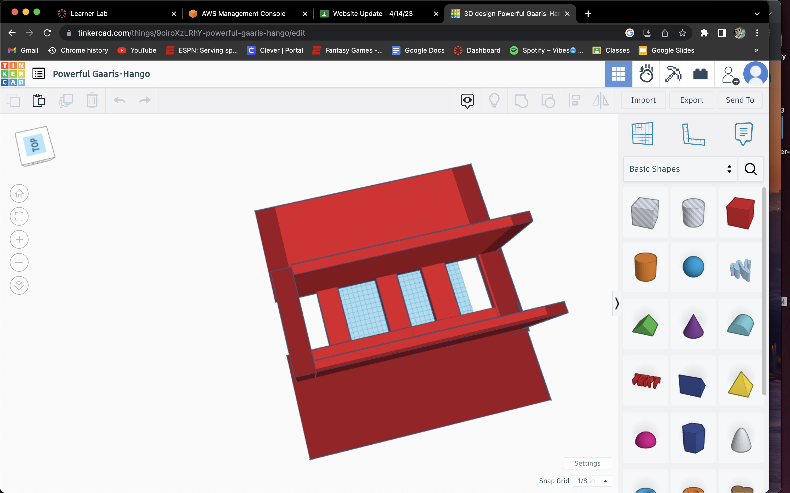
4/20/23
This week we continued to work on our boat project. THis week we tested our prototype project for the first time. Our goal was to be able to carry 3 bricks and float properly without breaking. But, when we put the three bricks into the boat and carried it to put it in the boat, the base of the boat broke off and started to sink. So it was safe to say our prototpe was a fail. Now, we are starting to work on the final project by building a big base and being able to cover all the sides and make it safe from sinking with my groupmates who go in the boat.
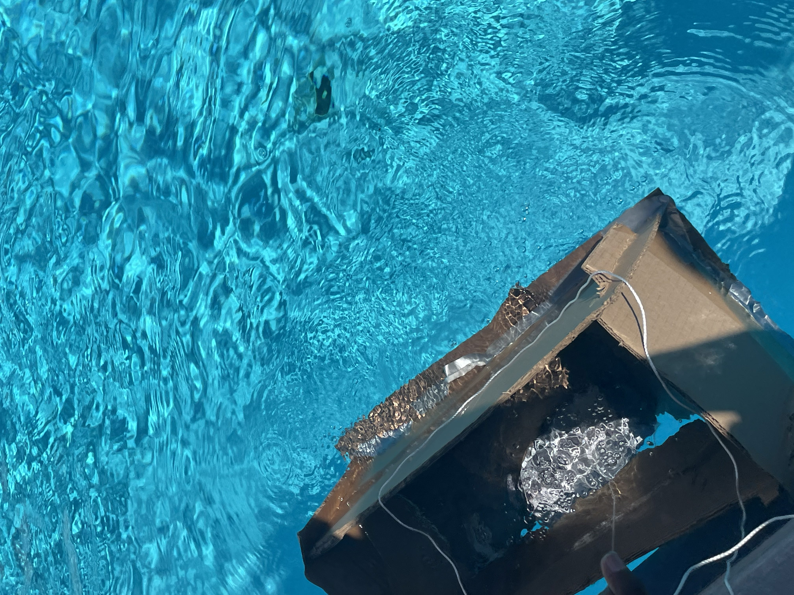
4/28/23
This week we continued to work on our boats. After we tested our prototype and saw how it failed really badly, we decided to start working on our final project. But, we ended up deciding to make it our second prototype because we didnt't know how our desing of making it long a big would work. So we decided to make it a test boat. After we see what happens with out second prototype next week and we decide on if we want to keep the same design or we make a new design and try that as our final. Here is a photo of our project so far. The mini boat inside of our is not ours, it is another groups boat, ours is the outside one.
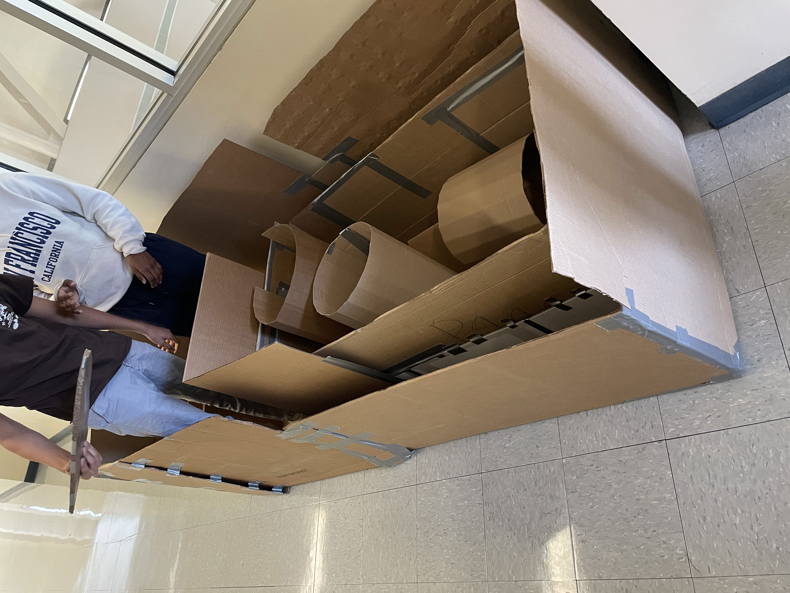
5/15/23
This week we continued to work on our boats. On our boats we decided to try to complete the double boat design with short walls. On tuesday after we made the walls, someone broke the walls off the project. On tuesday i did not come to school because i was sick and didn't feel well. Since someone broke our walls, we got some extra tape to use. Now, we are almost done with our walls and it is going really well. We have 1 week until we have to turn it in, so we are trying to finish as fast as we can.
5/26/23
This week we finally finished our boat. Just to recap our boat, it is two side by side boats held together with string. Then, when we put it together it will be two boats one by one with one in the front. Below is a photo of our completed boat. On thursday, the challenge day was to make a book stand to hold a book out of paper. But, since we weren't done with our boat, we ended up not doing the paper book holder and we ended up finishing our boat. Below will also be the link to our project analaysis.
This is my project analysis for our boat project.
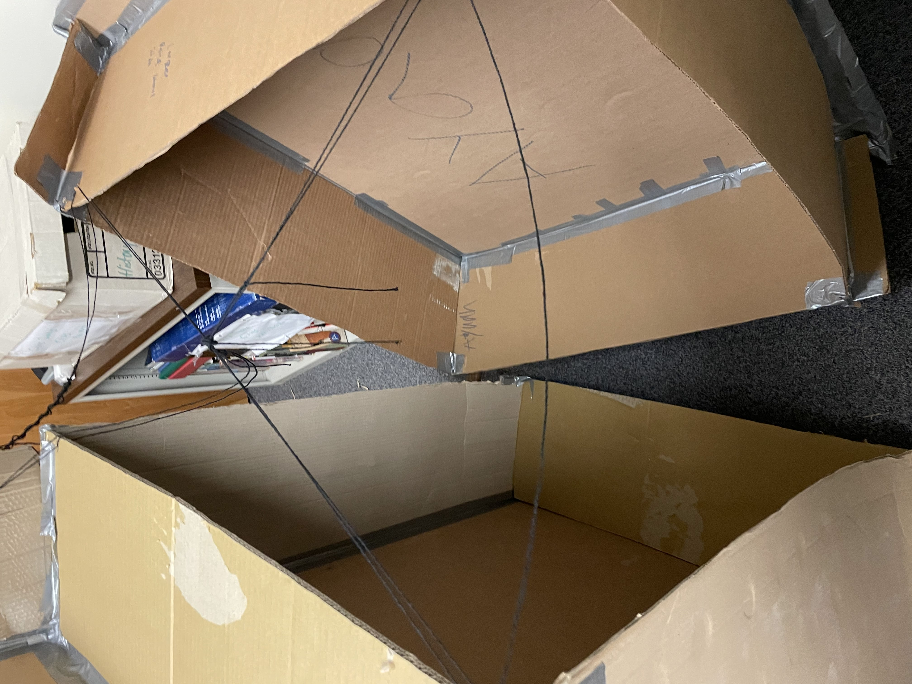


 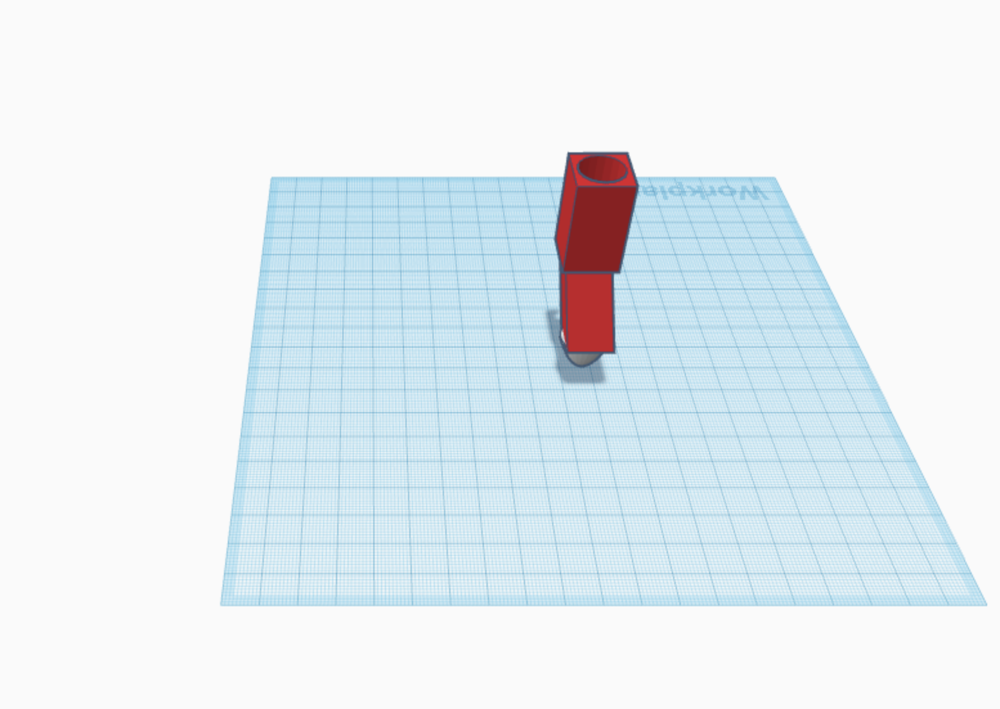
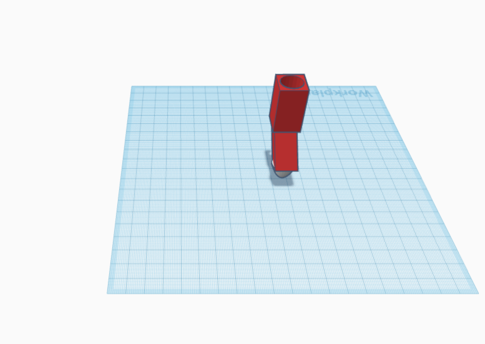
 3/31/23
This week we started to make our actual box for our egg drop. As shown on the cad before, the design is that we make a big box with a mini box then a mini box with a egg and three balloons to make sure the landing is good. Also we add a parachute on top to make sure the landing goes slowely. We tested on friday and our design worked and we did not break the egg. AWS ended the course so we could not update the website. Here is a video of it.
4/7/23
This week we started our final project which is to make a boat to flaot in water. Our goal is to let 2 people float in the boat and go from one side of the pool to the other side. This week we just started making a design of what we want our boat to look like. The design below is good and it will have enough protection from it to sink.
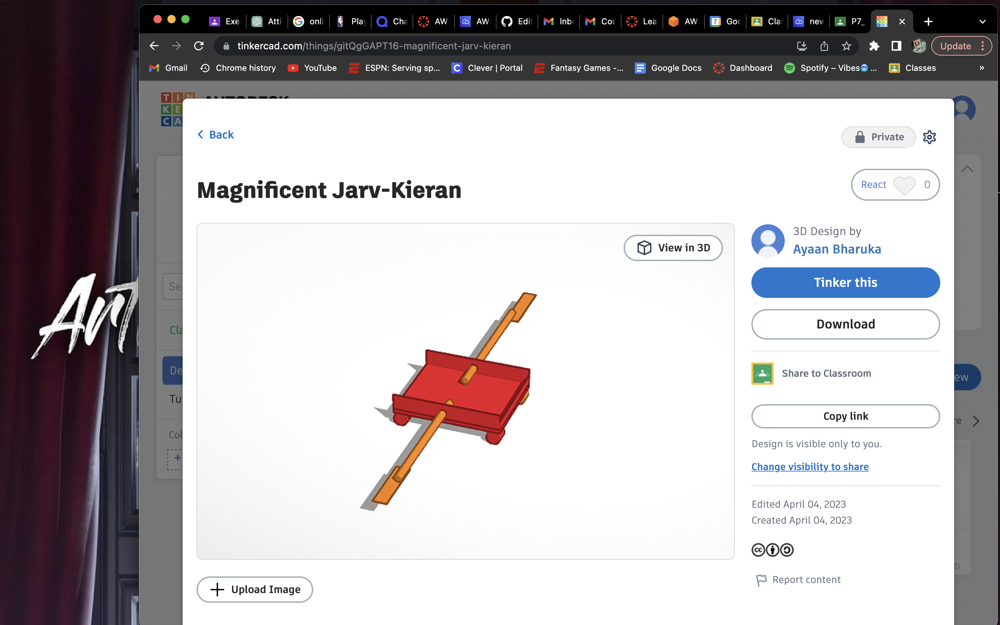
4/14/23
This week we started to build a test boat out of cardboard. This is a small version of our boat and we decided to make a design that is two boats next to each other and the are connected through a tube on the sides. Below is a photo of our cad design. We are thinking of making a two boat design because if therre are two people on the same boat, it could make it too heavy. So if we make two boats it would be easier to make it stable.
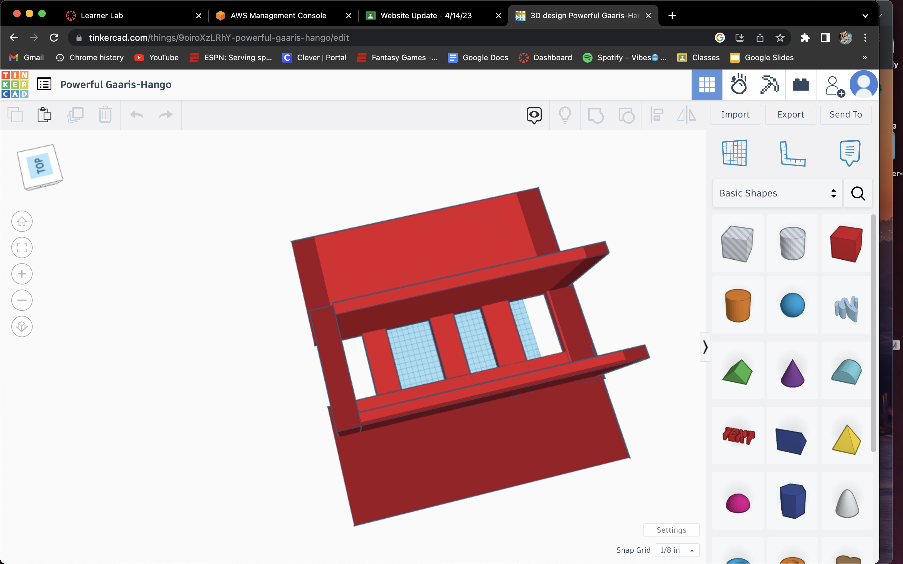
4/20/23
This week we continued to work on our boat project. THis week we tested our prototype project for the first time. Our goal was to be able to carry 3 bricks and float properly without breaking. But, when we put the three bricks into the boat and carried it to put it in the boat, the base of the boat broke off and started to sink. So it was safe to say our prototpe was a fail. Now, we are starting to work on the final project by building a big base and being able to cover all the sides and make it safe from sinking with my groupmates who go in the boat.
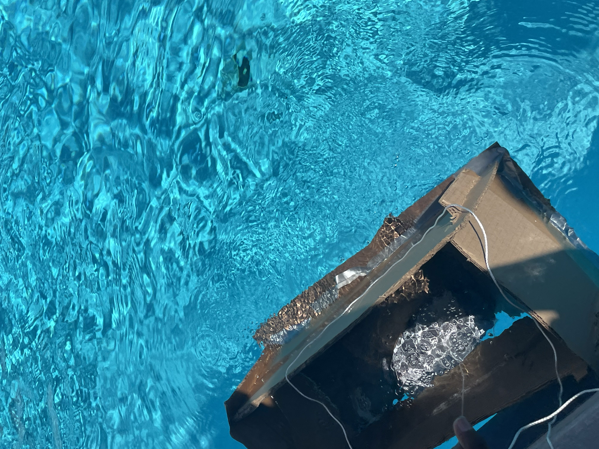
4/28/23
This week we continued to work on our boats. After we tested our prototype and saw how it failed really badly, we decided to start working on our final project. But, we ended up deciding to make it our second prototype because we didnt't know how our desing of making it long a big would work. So we decided to make it a test boat. After we see what happens with out second prototype next week and we decide on if we want to keep the same design or we make a new design and try that as our final. Here is a photo of our project so far. The mini boat inside of our is not ours, it is another groups boat, ours is the outside one.
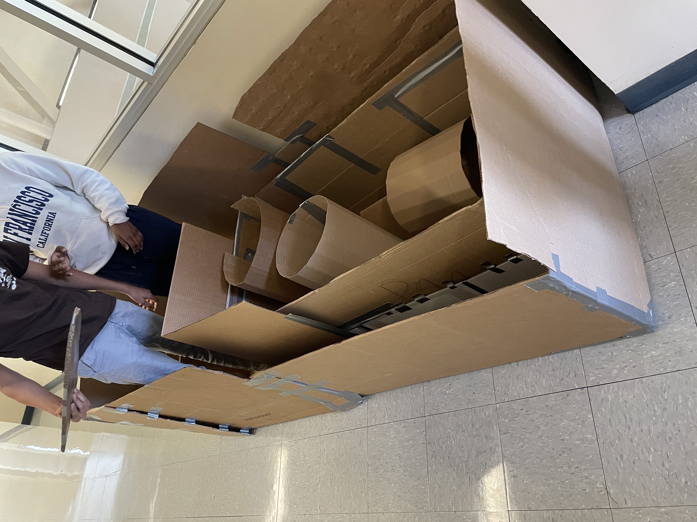
5/15/23
This week we continued to work on our boats. On our boats we decided to try to complete the double boat design with short walls. On tuesday after we made the walls, someone broke the walls off the project. On tuesday i did not come to school because i was sick and didn't feel well. Since someone broke our walls, we got some extra tape to use. Now, we are almost done with our walls and it is going really well. We have 1 week until we have to turn it in, so we are trying to finish as fast as we can.
5/26/23
This week we finally finished our boat. Just to recap our boat, it is two side by side boats held together with string. Then, when we put it together it will be two boats one by one with one in the front. Below is a photo of our completed boat. On thursday, the challenge day was to make a book stand to hold a book out of paper. But, since we weren't done with our boat, we ended up not doing the paper book holder and we ended up finishing our boat. Below will also be the link to our project analaysis.
This is my project analysis for our boat project.
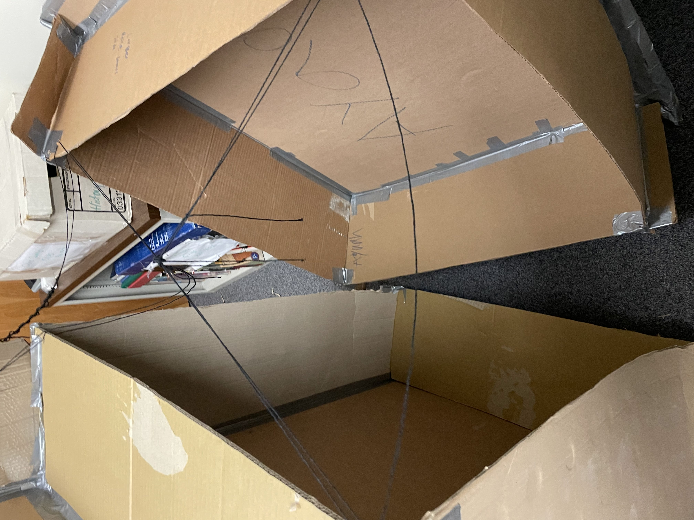
3/31/23
This week we started to make our actual box for our egg drop. As shown on the cad before, the design is that we make a big box with a mini box then a mini box with a egg and three balloons to make sure the landing is good. Also we add a parachute on top to make sure the landing goes slowely. We tested on friday and our design worked and we did not break the egg. AWS ended the course so we could not update the website. Here is a video of it.
4/7/23
This week we started our final project which is to make a boat to flaot in water. Our goal is to let 2 people float in the boat and go from one side of the pool to the other side. This week we just started making a design of what we want our boat to look like. The design below is good and it will have enough protection from it to sink.
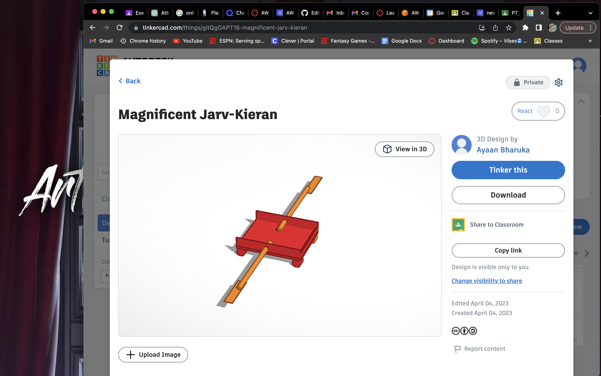
4/14/23
This week we started to build a test boat out of cardboard. This is a small version of our boat and we decided to make a design that is two boats next to each other and the are connected through a tube on the sides. Below is a photo of our cad design. We are thinking of making a two boat design because if therre are two people on the same boat, it could make it too heavy. So if we make two boats it would be easier to make it stable.
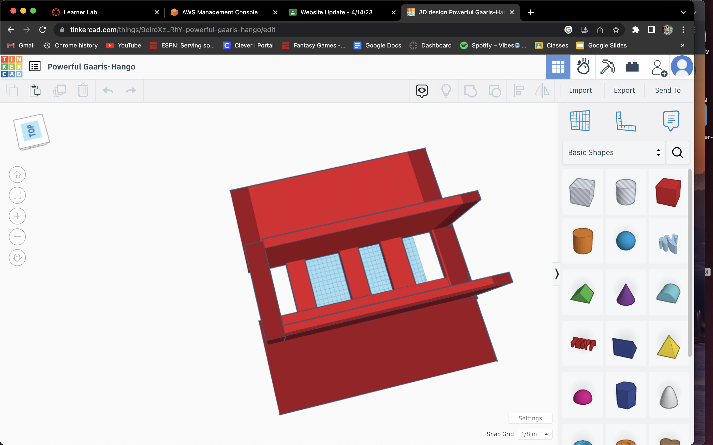
4/20/23
This week we continued to work on our boat project. THis week we tested our prototype project for the first time. Our goal was to be able to carry 3 bricks and float properly without breaking. But, when we put the three bricks into the boat and carried it to put it in the boat, the base of the boat broke off and started to sink. So it was safe to say our prototpe was a fail. Now, we are starting to work on the final project by building a big base and being able to cover all the sides and make it safe from sinking with my groupmates who go in the boat.
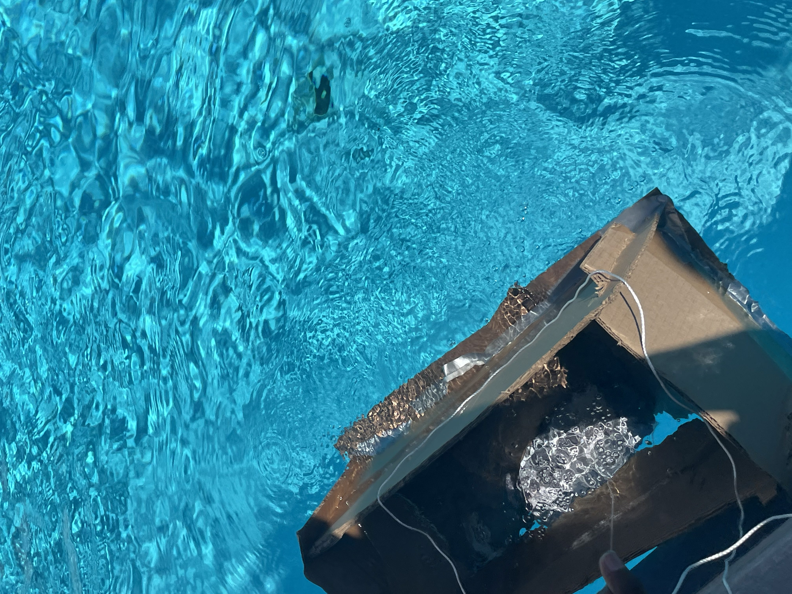
4/28/23
This week we continued to work on our boats. After we tested our prototype and saw how it failed really badly, we decided to start working on our final project. But, we ended up deciding to make it our second prototype because we didnt't know how our desing of making it long a big would work. So we decided to make it a test boat. After we see what happens with out second prototype next week and we decide on if we want to keep the same design or we make a new design and try that as our final. Here is a photo of our project so far. The mini boat inside of our is not ours, it is another groups boat, ours is the outside one.
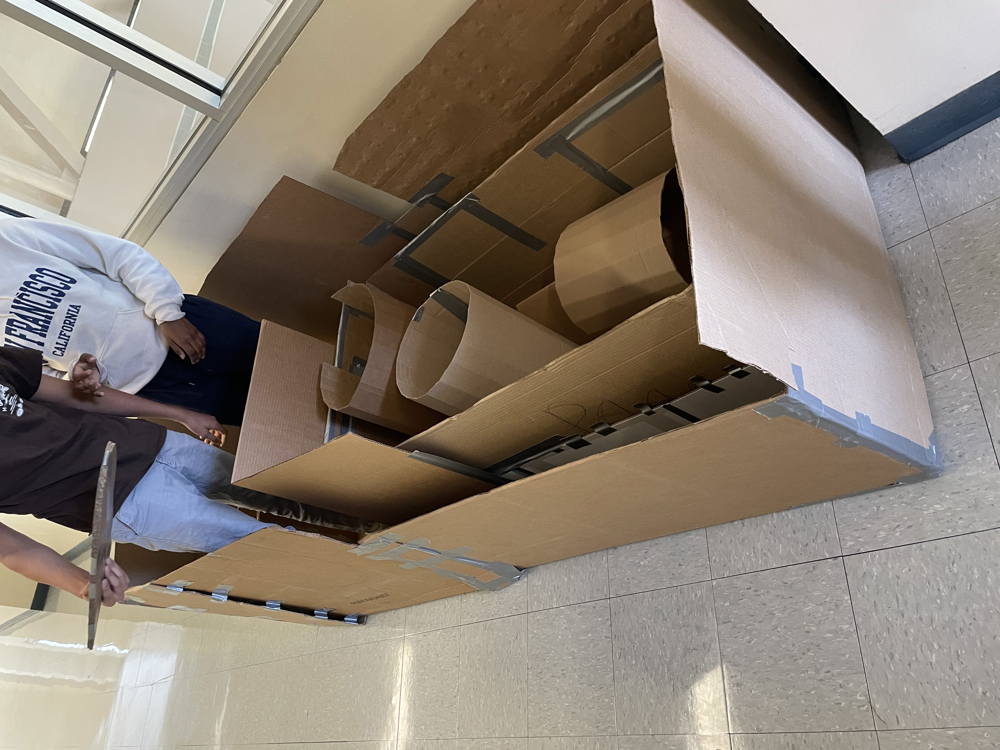
5/15/23
This week we continued to work on our boats. On our boats we decided to try to complete the double boat design with short walls. On tuesday after we made the walls, someone broke the walls off the project. On tuesday i did not come to school because i was sick and didn't feel well. Since someone broke our walls, we got some extra tape to use. Now, we are almost done with our walls and it is going really well. We have 1 week until we have to turn it in, so we are trying to finish as fast as we can.
5/26/23
This week we finally finished our boat. Just to recap our boat, it is two side by side boats held together with string. Then, when we put it together it will be two boats one by one with one in the front. Below is a photo of our completed boat. On thursday, the challenge day was to make a book stand to hold a book out of paper. But, since we weren't done with our boat, we ended up not doing the paper book holder and we ended up finishing our boat. Below will also be the link to our project analaysis.
This is my project analysis for our boat project.
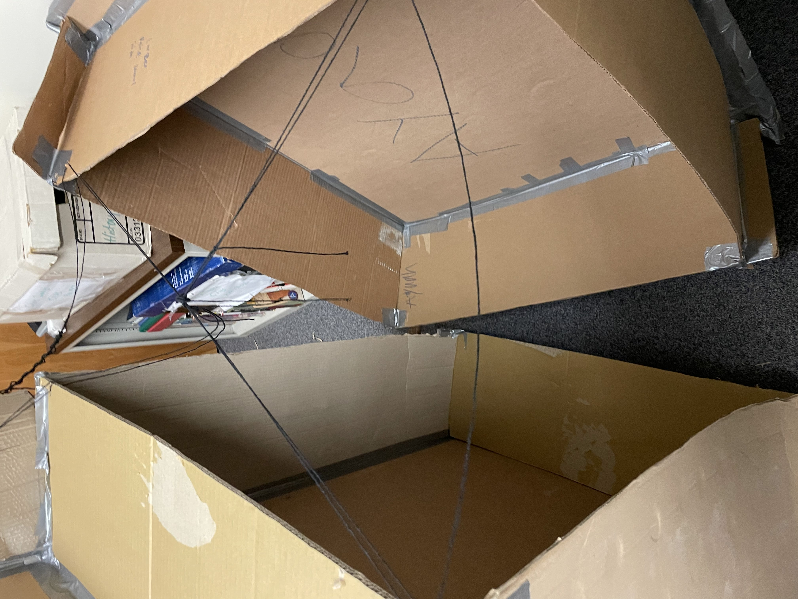